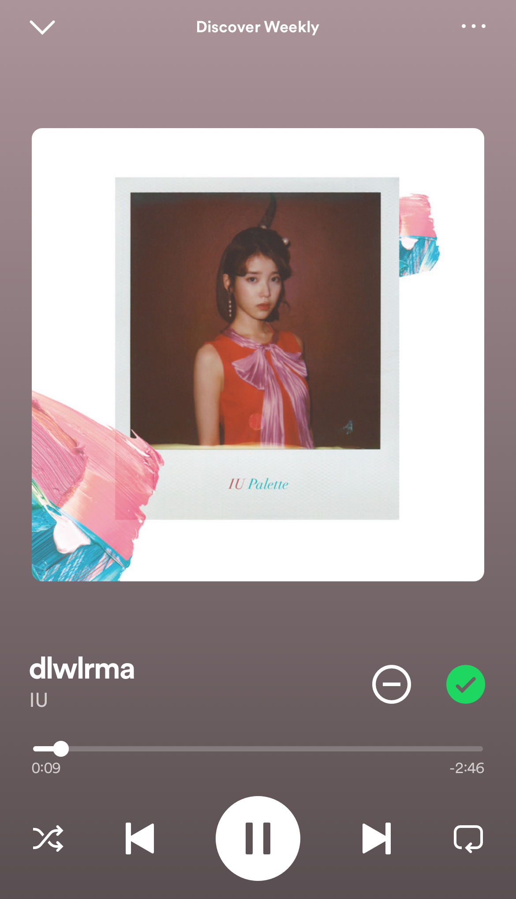

As of 2/4/2024 I have completed four books out of the 24 books I've challenged myself to read this year. I will conquer my GoodReads challenge this year! My most recent read:
I have always had an affinity for music, and love to explore new genres and artists regularly. I'm currently working on a playlist where each week I save my favorite song from that week's Spotify-generated Discovery Weekly playlist. I can't wait to get to the end of the year and see the tapestry of sounds that it will contain. My saved song for this week:
I used to dream of being a polyglot and then one day I asked myself, why not? Now I have a Duolingo streak that is over 400 days long and going strong! I try to supplement that learning with traditional textbooks and by immersing myself into the language through some of my favorite medias (kpop and kdramas). What I'm currently watching:
I've known how to knit (the very basics) since I was a child, but recently I've been intrigued by the practicality of knitting. Being a sweater girlie, my goal is to knit myself a fully functional and aesthetic sweater (and maybe a pair of socks). The sweater pattern I have my eye on:
I try to workout at least 3 times a week. I love tracking my runs and gradually seeing my PR times improve. My goal is to run a 5k without stopping. Last month my fastest mile time was: